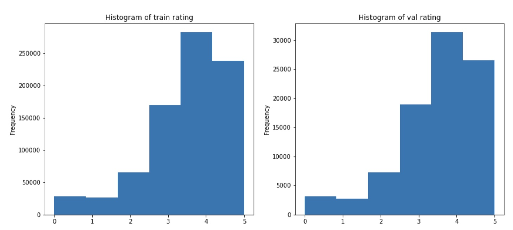
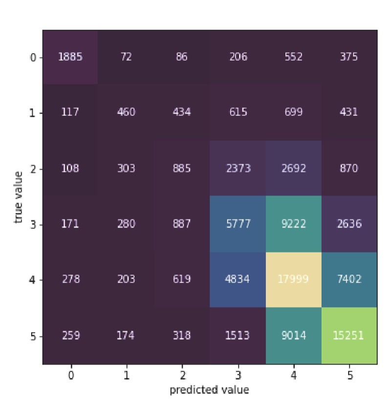

Goodreads Book Rating Prediction
Apr 2023 ~ Kaggle competition
Length: 1w (at 0.25 FTE)
Programming language: Python (Pandas, NumPy, datetime, Matplotlib, seaborn,
scikit-learn, NLTK, W&B, argparse, LightGBM, CatBoost)
Data: Approximately 0.9M book reviews, containing the book, stats, author,
and review text
Problem description:
Predict the review ratings of books on Goodreads
Approach:
First, the data was split into the train, validation, and test sets. In order to validate the data
partitioning, the distributions of multiple features were compared across the sets, including
the target feature "rating", which can be seen in the picture below. Concerning data leakage,
two controversial features are "book_id" and "user_id". If the project goal was performing well
on new users and books, these features would be best removed. However, given that the objective
is to reach the best F1 score in the competition, these variables were kept.

Next, the train set was explored and cleaned by filling in missing values, converting features to the right type, dropping useless columns, and deriving additional variables, such as the reading duration, the review length, and whether this is a spoiler or not. Afterward, the same cleaning methods were applied to the other two sets (validation and test set).
Finally, two tree models were designed, namely a LightGBM and a CatBoost classifier, and tuned to achieve the best F1 score on the validation data.
Results:
Since the rating 4 is the most common one, the naïve baseline was computed by setting all ratings of the validation reviews to 4. Accordingly, this resulted in an F1 score of 0.08.
The best model turned out to be a LightGBM classifier, which reached a score of 0.4 on the validation set, a result five times better than the naïve baseline. On the test data, the model scored 0.38, implying no significant overfitting on the validation set.
The confusion matrix below shows that the model does not make big mistakes, with most of the predictions close to the true values of the ratings, as expressed by the lighter shades close to the main diagonal. Generally, when the model fails to predict the rating correctly, it misses the value by 1-2 points.

Not surprisingly, the two ID features reached the highest importance among all the features, with a significant distance to the third most important feature.
| Feature | Importance |
|---|---|
| book_id | 34054 |
| user_id | 31544 |
| review_length | 880 |
| read_duration | 650 |